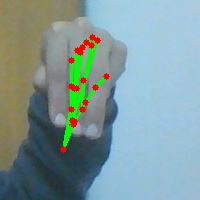

96,145 of 159,987 rows now have recovered import-source tags across 24 sessions. These are source archives, not verified people.
Numerical and canonical split validation: passed. No labels, rows or original splits were changed. No F1 increase is claimed.
These labels have evaluation rows from a recovered source but no training rows of that label from the same source. This is evidence of source-domain coverage differences, not proof of bad test labels. Other unresolved sources may have additional gaps.
| Partition | Label | Rows |
|---|---|---|
| validation | W | 4165 |
| test | G | 4126 |
| test | I | 3940 |
| test | K | 4523 |
| test | M | 3315 |
| test | O | 4146 |
| test | Q | 3627 |
| test | X | 3894 |
Original image and detected landmarks. The original M label is unchanged and still needs linguistic review.

